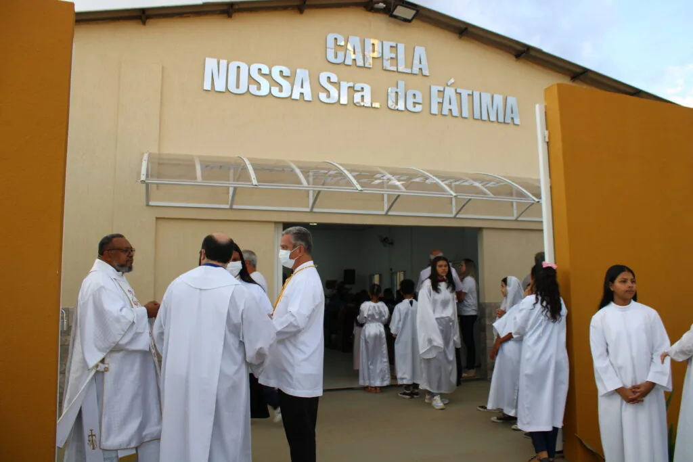
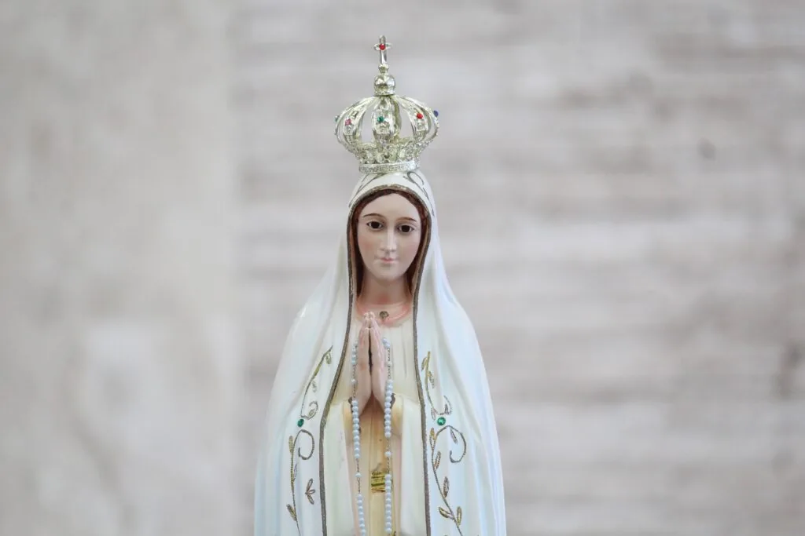

Uma comunidade que nasceu da fé e da união dos moradores.
A Capela Nossa Senhora de Fátima nasceu da necessidade dos moradores do Setor de Chácaras do Lúcio Costa.
A comunidade pediu ao então pároco, padre Olmer, que houvesse a celebração da missa pelo menos uma vez ao mês na região. Os moradores se organizaram e a missa começou a ser celebrada na casa de uma das pessoas da comunidade.
Em 2016, durante a Visita Pastoral e Missionária que ocorreu dos dias 12 a 15 de maio, com o então Arcebispo Dom Sérgio da Rocha, uma família doou um terreno à paróquia destinado à construção de uma capela para a comunidade da região.
Após a visita começou o movimento para a construção da capela. Atualmente, a capela tem celebração uma vez por semana, aos sábados às 17h.


Ave Maria, cheia de graça,
o Senhor é convosco;
bendita sois Vós entre as mulheres e
bendito é o fruto do Vosso ventre, Jesus.
Santa Maria, Mãe de Deus,
rogai por nós, pecadores,
agora e na hora da nossa morte.
Amém.
Venha celebrar conosco na Capela Nossa Senhora de Fátima.
Ver horários